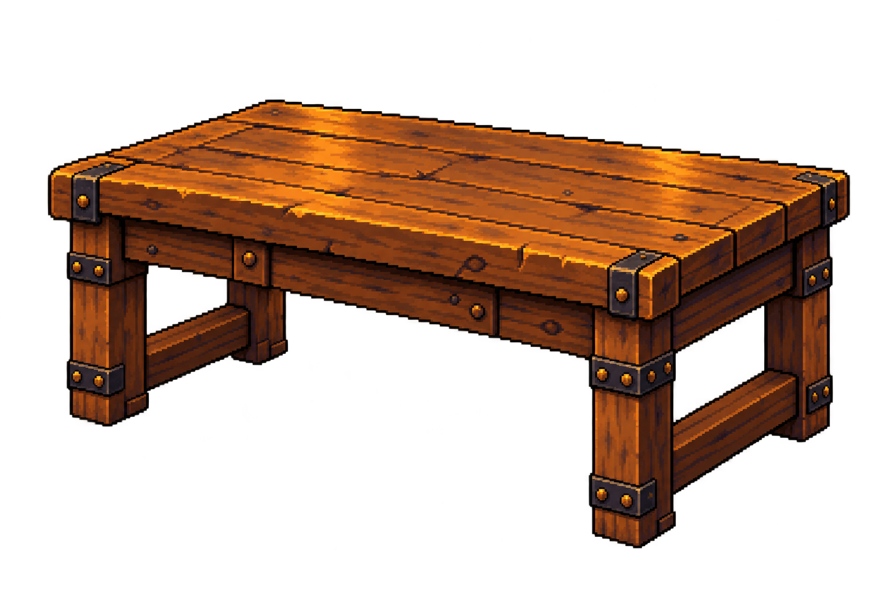
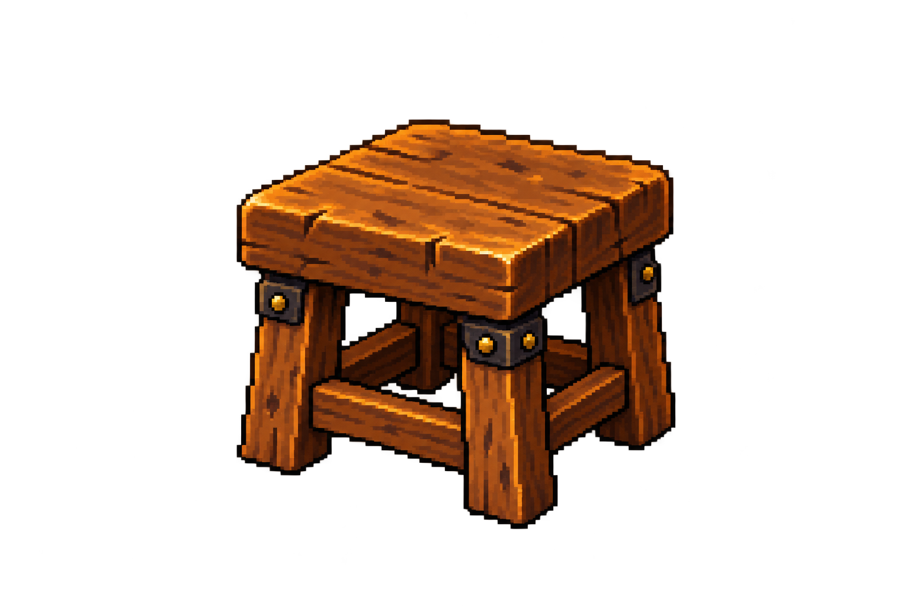
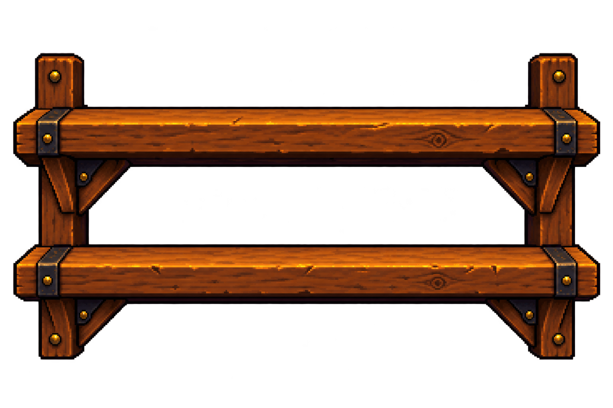
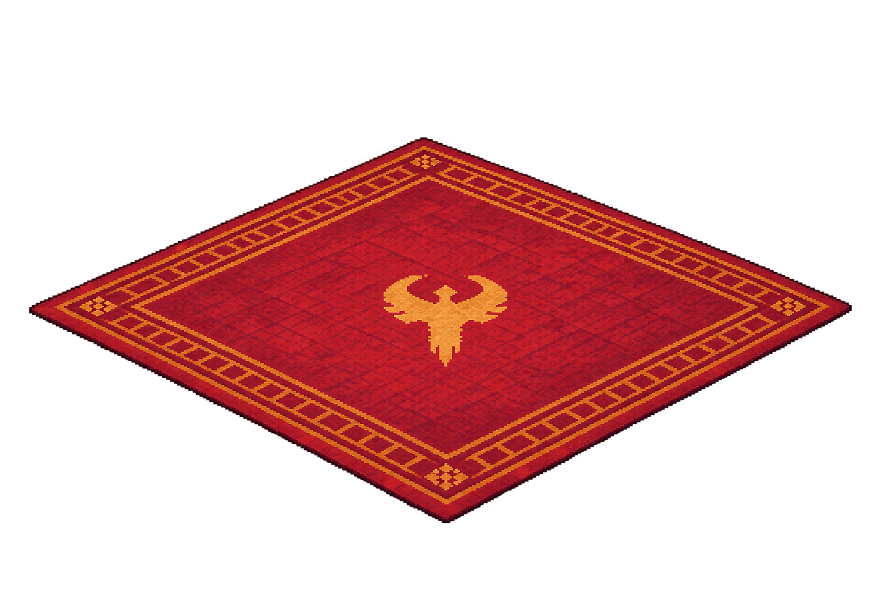

Desk, stool, wall shelf and rug in one MR. Each image is a separate single-object file. Built-in imagegen artwork, saved and exported through AutoSprite without paid background removal. Visual review pending.
Positions and scales stay rough for the user's later manual alignment pass. The desk and shelves are intentionally empty for separate decorations. The rug draws beneath the character and furniture.
Actual Unity composition · Exact prompts · Sources, hashes and AutoSprite record

Use case: stylized-concept. Asset type: one isolated complete static room prop for a Unity pixel-art fantasy fitness app. Input image is the approved Home concept, a style and design reference only. Match its warm amber-lit worn oak, dark iron and aged brass, crisp 16-bit-inspired pixel clusters and dark pixel edges. Use the same shallow three-quarter view from slightly above unless specified. One whole object per image with all edges complete. Genuine transparent RGBA background including every air gap; no painted room, floor or cast floor shadow, character, interface, labels, text, border or contact sheet. Landscape 1536x1024 canvas with generous transparent margin. Subject: ONLY the rustic desk at the far right of the reference. Broad thick oak plank tabletop, four square sturdy legs, simple apron and cross braces, restrained dark iron corner straps with brass rivets. Camera shows its long front and right side, tabletop receding toward upper right. Complete empty desk. Omit everything placed on it: no books, lamp, candle, fabric, plant, stool or other objects. Leave genuine open air beneath the desk; do not fill the space with a cabinet. Preserve a useful clear tabletop for later separate decorations.

Use case: stylized-concept. Asset type: one isolated complete static room prop for a Unity pixel-art fantasy fitness app. Input image is the approved Home concept, a style and design reference only. Match its warm amber-lit worn oak, dark iron and aged brass, crisp 16-bit-inspired pixel clusters and dark pixel edges. Use the same shallow three-quarter view from slightly above unless specified. One whole object per image with all edges complete. Genuine transparent RGBA background including every air gap; no painted room, floor or cast floor shadow, character, interface, labels, text, border or contact sheet. Landscape 1536x1024 canvas with generous transparent margin. Subject: ONLY a small low square wooden stool like the one in front of the right-side desk in the reference. Thick square oak seat with worn rounded pixel corners, four stout legs, solid connected lower stretchers, small dark iron brackets with brass studs. View shows front and right side and the top of the seat. All four legs physically connect to the seat; no extra feet or overlapping duplicate supports. Stool is empty. No desk, cushion, fabric, books, lamp or other objects.

Use case: stylized-concept. Asset type: one isolated complete static room prop for a Unity pixel-art fantasy fitness app. Input image is the approved Home concept, a style and design reference only. Match its warm amber-lit worn oak, dark iron and aged brass, crisp 16-bit-inspired pixel clusters and dark pixel edges. Use the same shallow three-quarter view from slightly above unless specified. One whole object per image with all edges complete. Genuine transparent RGBA background including every air gap; no painted room, floor or cast floor shadow, character, interface, labels, text, border or contact sheet. Landscape 1536x1024 canvas with generous transparent margin. Subject: ONLY a complete empty wall-mounted oak shelving unit matching the two wooden shelves behind and to the left of the character in the reference. Two horizontal thick oak shelf boards with a clear open gap between them, two short vertical supports against the wall and coherent triangular support brackets underneath each board. Dark iron fasteners, small brass studs. Almost frontal view with a little top surface visible, as it mounts on the rear wall. No floor legs. The open space above and between shelves must be transparent, not a painted backboard or wall. No books, trophy, plants, bottles, candles or other contents; those will be separate decorations later.

Use case: stylized-concept. Asset type: one isolated complete static room prop for a Unity pixel-art fantasy fitness app. Input image is the approved Home concept, a style and design reference only. Match its warm amber-lit worn oak, dark iron and aged brass, crisp 16-bit-inspired pixel clusters and dark pixel edges. Use the same shallow three-quarter view from slightly above unless specified. One whole object per image with all edges complete. Genuine transparent RGBA background including every air gap; no painted room, floor or cast floor shadow, character, interface, labels, text, border or contact sheet. Landscape 1536x1024 canvas with generous transparent margin. Subject: ONLY the large oxblood-red woven rectangular floor rug under the character in the reference. Flat thin carpet with subtle gold geometric double border, small gold diamond corner details and a subdued central barbarian-style geometric emblem. Perspective must match the room floor: broad shallow rhomboid/quadrilateral seen from above at the room's camera angle, receding toward upper right, front corner nearest the viewer at lower center. Entire rug outline visible, complete formerly occluded regions, gentle tiny woven edge wear, no rolled corners or folds. Restrained pattern so the character remains visually dominant. No floor, furniture, character, stone tiles, cast shadow or glow. Transparent surrounding area.